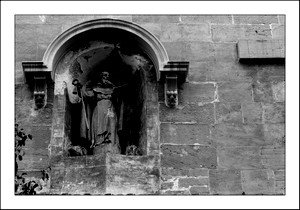

San Antonio de Viena
Iglesia de San Antonio
Perteneció a la orden de los Antonianos Hospitalarios desde 1230, en que Jaume I les donó el terreno para construir el convento, hasta su supresión en 1788, orden especializada en el “Mal del fuego” o “fuego de San Antonio”, una enfermedad común en la Edad Media que consistía en una intoxicación alimentaría al comer centeno produciendo gangrena y sensaciones abrasadoras. En su entrada hay una imagen de San Antonio acompañado de un cerdo, pero es parte de la tradición que le envuelve como patrón de los animales. Las fiestas de Sant Antoni son de las más populares en la isla y en la parte superior de la fachada del convento se puede observar una cruz Tau, símbolo de la orden.